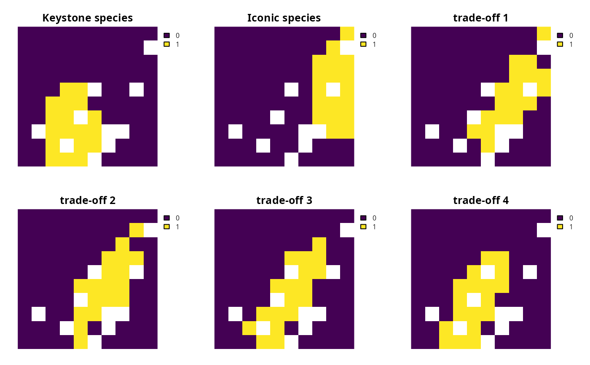
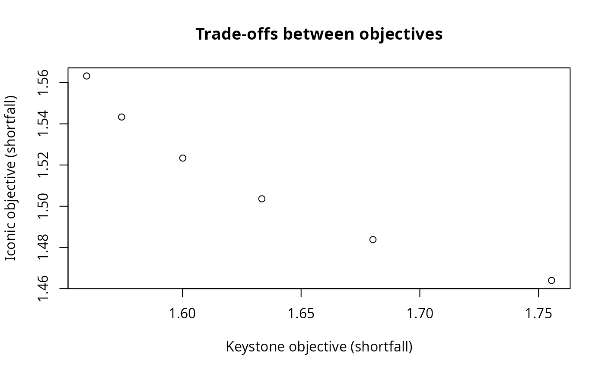

Add epsilon constraint approach
Source:R/add_eps_constraint_approach.R
add_eps_constraint_approach.RdAdd an epsilon-constraint approach for multi-objective optimization to a conservation planning problem (Eichfelder 2008).
Arguments
- x
prioritizr::multi_problem()object.- n_per_problem
integernumber of solutions to attempt to generate per problem inx. Note that this number does not include solutions that represent optimizing exclusively on each objective individually (i.e., extreme points of the Pareto frontier). In particular, the total number of solutions that this approach attempts to generate is is equal to \(o + n^{(o - 1)}\), where \(o\) is the number of problems inxand \(n\) is equal ton_per_problem. For example, ifxhad three problems andn_per_problem = 4, then this approach will attempt to generate 19 solutions. Due to the mathematical details of this approach (see below), it is not guaranteed to generate a solution for each attempt and will often generate fewer solutions than it attempts.- verbose
logical(TRUE/FALSE) should progress on generating solutions displayed? Defaults toTRUE.
Value
An updated prioritizr::multi_problem() object with the approach
added to it.
Details
This multi-objective optimization approach is especially useful for
characterizing the full range of trade-offs between objectives when
there is a well-defined order of importance among the objectives in a
planning exercise.
In general, we recommend using this approach for characterizing
the full range of trade-offs between objectives because it has procedures
that automatically account for the best and worst possible levels for
achievement when optimizing each of the different objectives.
Due to these procedures, this approach does not require the user
to specify trade-off parameters (e.g., unlike rel_tol for
prioritizr::add_hier_approach()) and instead only requires
the user to specify a parameter that reflects the maximum number of
desired solutions. Furthermore, this approach is not sensitive to
differences in scale among different objectives (unlike the weighted sum
approach, prioritizr::add_wtd_sum_approach();
see Das and Dennis 1997 for details), and so it
can be readily applied to a wide range of objectives.
Mathematical formulation
This approach can be expressed mathematically for a set of
objectives associated with the problem() objects in x.
Let \(O\) denote the set of objectives (indexed by \(o\)).
For brevity, we will assume that all of the objectives should ideally be
maximized and have been sorted in order of
priority (per priority), such that the objective with the highest priority
is \(o=1\), objective with the second highest priority is
\(o=2\), and so on.
Although this approach can be applied to an arbitrary number
of objectives, we will assume that \(O\) has three objectives when
explaining this approach.
Also, let \(f_o(x)\) denote the objective function for each
objective \(o \in O\), where \(x\) represents all the decision
variables for calculating the objective values (e.g., planning unit selection
status values).
Additionally, let \(S\) represent the set (region) of feasible
values for \(x\) based on the constraints for all of the objectives
(e.g., if the first problem in x has locked in constraints and the
second problem has locked out constraints, then \(S\) would
account for both the locked in and locked out constraints).
Given this terminology, the approach starts by formulating a set of
multi-objective optimization problems to generate a solution
that focuses primarily on each objective whilst accounting for the
the other objectives too (hereafter, extreme points).
Note that these multi-objective optimization problems are solved
using the hierarchical approach to optimization with relative tolerance
values set to zero (see prioritizr::add_hier_approach()) for details).
Multi-objective problem for first extreme point: $$ \mathit{Maximize} \space f_1(x), f_2(x), f_3(x) \\ \mathit{subject \space to \space} x \in S $$
Multi-objective problem for second extreme point: $$ \mathit{Maximize} \space f_2(x), f_1(x), f_3(x) \\ \mathit{subject \space to \space} x \in S $$
Multi-objective problem for third extreme point: $$ \mathit{Maximize} \space f_3(x), f_1(x), f_2(x) \\ \mathit{subject \space to \space} x \in S $$
After solving these problems to generate solutions,
let \(b_o\) denote the best
objective value for each objective. Also let \(w_o\) denote the
worst value for each objective. For each objective – except for
the first objective – we then generate
a sequence of (evenly distributed) numbers ranging from the worst objective
value (per \(w_o\)) to the best objective value (per \(b_o\)),
based on a predefined number of values (per n_per_problem).
For example, if the second objective had \(w_o = 1\) and
\(b_o = 5\) and n_per_problem = 3, then
the sequence of numbers for this objective would be equal to
\(\{2, 3, 4\}\).
Similarly, if the third objective had \(w_o = 5\) and
\(b_o = 15\) and n_per_problem = 3, then
the sequence of numbers for this objective would be equal to
\(\{7.5, 10.0, 12.5\}\).
We then use these sequences of numbers to generate a set of numbers that represents all possible combinations of numbers for each objective. For example, if we considered the previous sequences of (second objective) \(\{2, 3, 4\}\) and (third objective) \(\{7.5, 10.0, 12.5\}\), then we would generate the following set of nine combinations of numbers: \(\{2, 7.5\}\), \(\{3, 7.5\}\), \(\{4, 7.5\}\), \(\{2, 10\}\), \(\{3, 10\}\), \(\{4, 10\}\), \(\{2, 12.5\}\), \(\{3, 12.5\}\), \(\{4, 12.5\}\). For brevity, we let \(v_{io}\) denote the number for the objective \(o\) from the i'th sequence (e.g,. the number for the third objective in the first combination would be \(v_{12} = 7.5\)). Given this, the approach involves formulating an optimization problem based on each combination of numbers and solving it.
Problem based on first combination: $$ \mathit{Maximize} \space f_1(x), f_2(x), f_3(x) \\ \mathit{subject \space to \space} x \in S \\ f_2(x) >= v_{11}, \\ f_3(x) >= v_{12}, \\ $$
Problem based on second combination: $$ \mathit{Maximize} \space f_1(x), f_2(x), f_3(x) \\ \mathit{subject \space to \space} x \in S \\ f_2(x) >= v_{21}, \\ f_3(x) >= v_{22}, \\ $$
Problem based on third combination: $$ \mathit{Maximize} \space f_1(x), f_2(x), f_3(x) \\ \mathit{subject \space to \space} x \in S \\ f_2(x) >= v_{31}, \\ f_3(x) >= v_{32}, \\ $$ Problem based on i'th combination: $$ \mathit{Maximize} \space f_1(x), f_2(x), f_3(x) \\ \mathit{subject \space to \space} x \in S \\ f_2(x) >= v_{i1}, \\ f_3(x) >= v_{i2}, \\ $$
In this manner, the approach sequentially formulated and solves optimization problems until it has attempted to generate a solution for each combination of numbers. The resulting set of solutions represent varying degrees of compromise between different objectives. Note that because it may be impossible to generate a solution for some combinations of numbers, this approach may not actually generate a solution each and every combination. Finally, the approach then returns all of the solutions that were successfully generated (including the extreme points).
References
Das I and Dennis JE (1997) A closer look at drawbacks of minimizing weighted sums of objectives for Pareto set generation in multicriteria optimization problems. Structural Optimization, 14: 63–69.
Eichfelder G (2008) Adaptive Scalarization Methods in Multiobjective Optimization. Springer Berlin Heidelberg.
See also
See prioritizr::approaches for other functions for adding an approach.
Examples
# in this example, we aim to identify a set of planning units that will
# not exceed a particular budget and meet objectives for
# (i) representing species that are important for ecosystem
# functioning (hereafter, keystone species) and (ii) representing species
# that have high social or cultural value (hereafter, iconic species)
# load packages
library(prioritizr)
library(terra)
#> terra 1.9.27
#>
#> Attaching package: ‘terra’
#> The following object is masked from ‘package:prioritizr’:
#>
#> ncell
# import data
con_cost <- get_sim_pu_raster()
keystone_spp <- get_sim_features()[[1:3]]
iconic_spp <- get_sim_features()[[4:5]]
# define a total conservation budget (20% of total cost)
budget <- terra::global(con_cost, "sum", na.rm = TRUE)[[1]] * 0.2
# define a single-objective problem for the keystone species objective
p1 <-
problem(con_cost, keystone_spp) %>%
add_min_shortfall_objective(budget) %>%
add_relative_targets(0.4) %>%
add_binary_decisions()
# define a single-objective problem for the iconic species objective
p2 <-
problem(con_cost, iconic_spp) %>%
add_min_shortfall_objective(budget) %>%
add_relative_targets(0.8) %>%
add_binary_decisions()
# now create multi-objective problem with epsilon-constraint approach,
# with settings to generate (i) a solution for each objective
# and (ii) three additional solutions that represent a varying
# degree of trade-offs between these objectives
mp <-
multi_problem(keystone_obj = p1, iconic_obj = p2) %>%
add_eps_constraint_approach(n_per_problem = 4, verbose = TRUE) %>%
add_default_solver(gap = 0, verbose = FALSE)
# solve problem
ms <- solve(mp)
#> Generating solutions ■■■■■■■■■■■■■■■■ | 3/6 | 50% | ETA: 1s
#> Generating solutions ■■■■■■■■■■■■■■■■■■■■■■■■■■■■■■■ | 6/6 | 100% | ETA: 0s
# convert solutions to a multi-layer raster object
sol <- rast(ms)
# assign names to each solution
names(sol) <- c(
"Keystone species", "Iconic species",
paste("trade-off", seq_len(nlyr(sol) - 2))
)
# plot solutions to view selection of priority areas,
# here, the first two maps show solutions for best achieving
# each of the objectives, and the subsequent maps show solutions
# that aim to reach varying degrees of compromise between the objectives
plot(sol, axes = FALSE)

# extract objective values for the solutions
obj_matrix <- attributes(ms)$objective
# print the objective values
print(obj_matrix)
#> keystone_obj iconic_obj
#> solution_1 1.559674 1.563225
#> solution_2 1.755484 1.463960
#> solution_3 1.680262 1.483804
#> solution_4 1.633465 1.503609
#> solution_5 1.600177 1.523389
#> solution_6 1.574416 1.543313
# plot the objectives values to visualize trade-offs
# (note that smaller values are better because these objectives seek to
# minimize representation shortfalls)
plot(
obj_matrix,
main = "Trade-offs between objectives",
xlab = "Keystone objective (shortfall)",
ylab = "Iconic objective (shortfall)"
)
